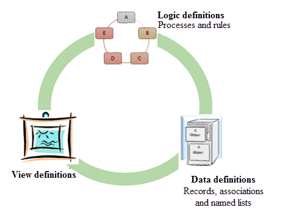

Configurable definitions
An application is made up of data, definitions, and code. The data and definitions can be configured to suit your application requirements. For example, if you have an application for on-boarding a new hire, the data required in this application are the employee details such as first name, last name, employee ID and so on. How to display this data in your application is determined by using definitions such as view definition, record definition and so on. An application includes a set of such definitions that work with the application code and functions as per your requirements.
You can customize various functionalities and user interface of an application using the definitions through BMC Helix Innovation Studio. The following image provides a brief categorization of the available definitions:

Data definitions
Data definitions represent the data model or schema of an application and define the data objects that it uses.
|
Data definition |
Description |
|
Records |
Record is similar to a database table. A record consists of various fields. |
|
Views |
View is a graphical representation of your application. You use the view definitions to design the user interface for applications. |
|
Processes |
Processes are the named services of an application that are responsible to perform a business logic and achieve the application purpose. You can invoke business logic for an application by calling processes of that application. |
|
Rules |
Rule, along with a process, models the business logic of an application. The purpose of a rule is to perform data validation, and interact with a process on record events or timer events. You can create rules that are triggered, based on a specific time interval or a schedule. |
|
Associations |
Association defines the relationship between records. |
|
Named Lists |
Named list is a reusable query that returns a logically-named set of data and settings. |
|
Documents |
A document definition is a schema with fields defined in JSON format. The purpose of the document definition to access individual attributes within a metadata object and then use those attributes in an expression for a process. |
|
Chatbots |
Set up specialized chatbots in an organization. This capability enables you to create specialized chatbots for each individual team or department, and train these chatbots so that they are experts in specific areas without any risk of overlapping. |
|
Web APIs |
Connect your application to the REST API web service of another application without using code or connectors. |
|
Events |
Events are the activities that occur in an application. Event attributes comprise the data related to the event that you want to track. |
|
Event Statistics |
Event statistics are the frequency at which you want to track the event data and to group the data to derive consolidated metrics. |
|
Configurations |
Configuration can create settings and configuration functions for your application. The types of configuration settings includes a set of parameters, key-value pairs, or a data wizard. |
Related topics
Defining record definitions to store and manage data
Defining the user interface through view definitions
Facilitating data entry through named lists
Defining the application business logic through processes
Adding rules to validate data or trigger events in a process